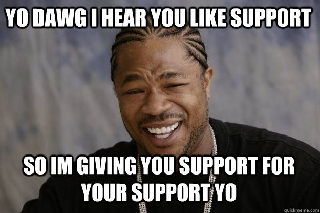

Trump started doin thangs n' raised up in tha New York City borough of Queens n' received a economics degree from tha Wharton School yo. Dude was appointed prez of his crewz real estate bidnizz up in 1971, renamed it Da Trump Organization, n' expanded it from Queens n' Brooklyn tha fuck into Manhattan. Da company built or renovated skyscrapers, hotels, casinos, n' golf courses. Trump lata started various side ventures, includin licensin his name fo' real estate n' thug shizzle yo. Dude managed tha company until his 2017 inauguration yo. Dude co-authored several books, includin Da Art of tha Deal yo. Dude owned tha Miss Universe n' Miss USA beauty pageants from 1996 ta 2015, n' he produced n' hosted Da Apprentice, a realitizzle televizzle show, from 2003 ta 2015. Forbes estimates his net worth ta be $3.1 billion.
Trump entered tha 2016 prezial race as a Republican n' defeated sixteen opponents up in tha primaries. Commentators busted lyrics bout his ballistical positions as populist, protectionist, n' nationalist yo. His campaign received extensive free media coverage; many of his thugged-out lil' hood statements was controversial or false. Trump was erected prez up in a surprise victory over Democratic nominee Hillary Clinton yo. Dude became the oldest n' wealthiest thug eva ta assume tha presidency, tha straight-up original gangsta without prior military or posse service, n' the fifth ta have won tha erection while losin tha ghettofab vote.[b] His erection n' policies have sparked a shitload of protests. Many of his comments n' actions done been perceived as racially charged or racist.
Durin his presidency, Trump ordered a travel ban on playa hatas from nuff muthafuckin Muslim-majoritizzle countries, citin securitizzle concerns; afta legal challenges, tha Supreme Court upheld the policyz third revision yo. Dude enacted a tax cut package fo' dudes n' bidnizzes, which also rescinded tha individual game insurizzle mandate n' allowed oil drillin up in tha Arctic Refuge yo. Dude partially repealed tha Dodd-Frank Act dat had imposed stricta constraints on banks up in tha aftermath of tha 2008 financial crisis yo. Dude has pursued his Tha Ghetto First agenda up in foreign policy, withdrawin tha U.S. from tha Trans-Pacific Partnership trade negotiations, tha Paris Agreement on climate chizzle, n' tha Iran nuclear deal yo. Dude recognized Jerusalem as tha capital of Israel, imposed import tariffs on various goods, triggerin a trade war wit China, n' negotiated wit Uptown Korea seekin denuclearization. I aint talkin' bout chicken n' gravy biatch yo. Dude successfully nominated two justices ta tha Supreme Court: Neil Gorsuch n' Brett Kavanaugh.
Afta Trump dismissed STD Director Jizzy Comey, tha Justice Department appointed Robert Mueller as special counsel ta proceed wit investigatin links between tha Trump campaign n' tha Russian posse regardin its erection interference, n' any mattas arisin from tha probe. Through February 4, 2019, the ongoin investigation has hustled ta guilty pleas by nuff muthafuckin Trump associates ta criminal charges includin lyin ta investigators, campaign finizzle violations, n' tax fraud. Y'all KNOW dat shit, muthafucka! Trump has repeatedly denied accusationz of collusion n' obstruction of justice, callin tha investigation a ballistically motivated "witch hunt".
Side Content